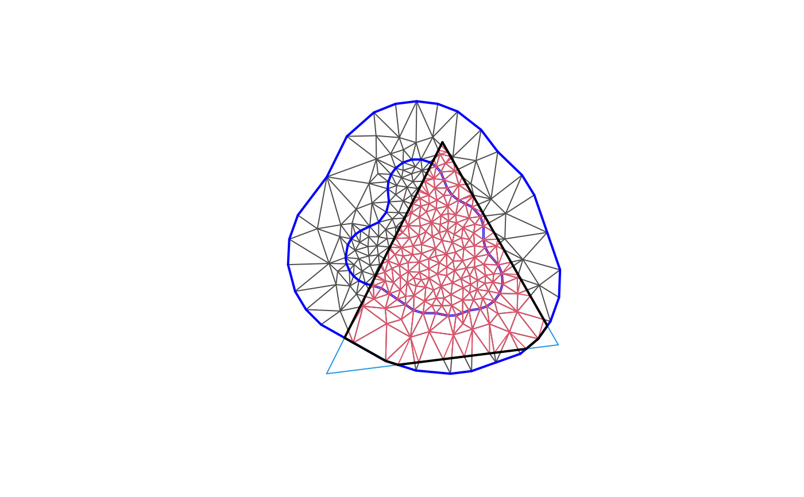
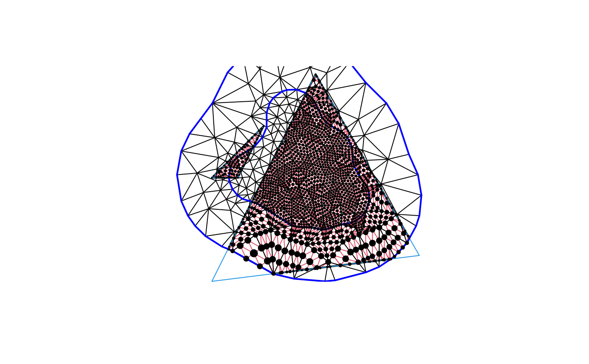
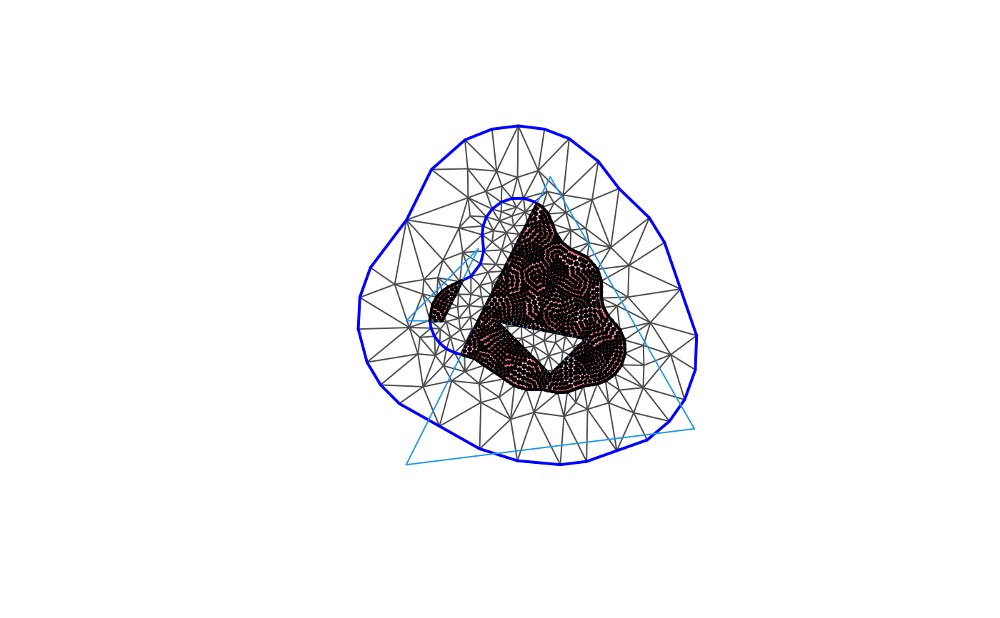
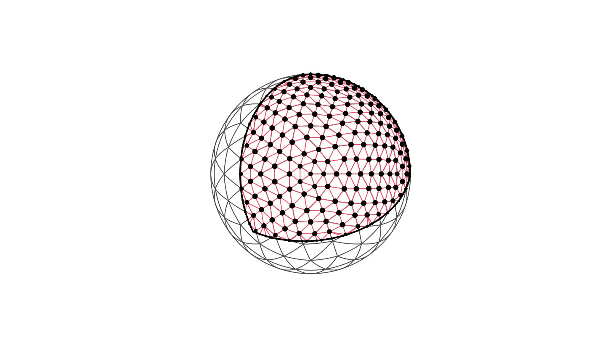

![[Experimental]](figures/lifecycle-experimental.svg) (from version
(from version 0.5.0.9006)
Arguments
- mesh
fm_mesh_2dobject to be intersected- poly
fm_segmobject with a closed polygon to intersect with the mesh, or a polygon object that can be converted withfm_as_segm()
Value
An fm_mesh_2d object
Author
Finn Lindgren Finn.Lindgren@gmail.com
Examples
segm <- fm_segm(
rbind(c(-4, -4), c(4, -3), c(0, 4)),
is.bnd = TRUE
)
(m <- fm_mesh_intersection(fmexample$mesh, segm))
#> fm_mesh_2d object:
#> Manifold: R2
#> V / E / T: 258 / 681 / 424
#> Euler char.: 1
#> Constraints: Boundary: 90 boundary edges (1 group: 0), Interior: 0 edges
#> Bounding box: (-3.376638, 3.620641) x (-3.704482, 4.000000)
#> Basis d.o.f.: 258
plot(fmexample$mesh)
lines(segm, col = 4)
plot(m, edge.color = 2, add = TRUE)

# \donttest{
# Non-overlapping addition
segm2 <- fm_segm(c(
segm,
fm_segm(
rbind(c(-4, 0), c(-3, 0), c(-2, 2)),
is.bnd = TRUE
)
))
(m2 <- fm_mesh_intersection(fm_subdivide(fmexample$mesh, 2), segm2))
#> fm_mesh_2d object:
#> Manifold: R2
#> V / E / T: 1946 / 5483 / 3539
#> Euler char.: 2
#> Constraints: Boundary: 349 boundary edges (1 group: 0), Interior: 0 edges
#> Bounding box: (-4.000000, 3.620641) x (-3.704482, 4.000000)
#> Basis d.o.f.: 1946
m2_int <- fm_int(m2)
plot(m2, edge.color = 2)
lines(segm2, col = 4)
plot(fmexample$mesh, edge.color = 1, add = TRUE)
plot(m2_int$geometry, pch = 20, cex = sqrt(m2_int$weight) * 4, add = TRUE)

# }
# \donttest{
# Add a hole and restrict to inner part of the original mesh
# To avoid issues with intersecting boundary segments, compute
# two separate intersection calculations in sequence.
# To allow this to be done as a single step, would need to first
# cross-intersect the boundary segments.
inner_bnd <- fm_segm(fmexample$mesh, boundary = FALSE)
fm_is_bnd(inner_bnd) <- TRUE
segm3 <- fm_segm(c(
segm2,
fm_segm(
rbind(c(-1.5, 0), c(1, -0.5), c(0, -1.5)),
is.bnd = TRUE
)
))
(m3 <- fm_mesh_intersection(
fm_mesh_intersection(
fm_subdivide(fmexample$mesh, 2),
inner_bnd
),
segm3
))
#> fm_mesh_2d object:
#> Manifold: R2
#> V / E / T: 1416 / 3868 / 2453
#> Euler char.: 1
#> Constraints: Boundary: 377 boundary edges (1 group: 0), Interior: 0 edges
#> Bounding box: (-3.345586, 2.076840) x (-1.997743, 3.263586)
#> Basis d.o.f.: 1416
m3_int <- fm_int(m3)
plot(fmexample$mesh)
plot(m3, edge.color = 2, add = TRUE)
lines(segm3, col = 4)
plot(m3_int$geometry, pch = 20, cex = sqrt(m3_int$weight) * 4, add = TRUE)

# }
# \donttest{
# Spherical mesh
(m_s2 <- fm_rcdt_2d(globe = 4))
#> fm_mesh_2d object:
#> Manifold: S2
#> V / E / T: 162 / 480 / 320
#> Euler char.: 2
#> Constraints: Boundary: 0 edges, Interior: 0 edges
#> Bounding box: (-1, 1) x (-1, 1) x (-1, 1)
#> Basis d.o.f.: 162
segm4 <- fm_segm(
rbind(
c(1, 0, 0.1) / sqrt(1.01),
c(0, 1, 0),
c(-1, -1, 1) / sqrt(3)
),
is.bnd = TRUE
)
(m4 <- fm_mesh_intersection(fm_subdivide(m_s2, 1), segm4))
#> fm_mesh_2d object:
#> Manifold: S2
#> V / E / T: 259 / 690 / 432
#> Euler char.: 1
#> Constraints: Boundary: 84 boundary edges (1 group: 0), Interior: 0 edges
#> Bounding box: (-0.7070939, 0.9950372) x (-0.674452, 1.000000) x (0,1)
#> Basis d.o.f.: 259
m4_int <- fm_int(m4)
plot(m_s2)
plot(m4, edge.color = 2, add = TRUE)
plot(m4_int$geometry, pch = 20, cex = sqrt(m4_int$weight) * 8, add = TRUE)

# }